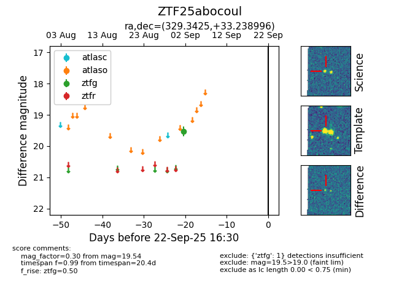

FINK: ZTF25abocoul
Lasair: ZTF25abocoul
ALeRCE: ZTF25abocoul
ZTF25abocoul (ztf,fink)
equatorial (ra, dec) = (329.3425,+33.23900)
galactic (l, b) = (85.9368,-16.84968)

last ztfg=19.54
1 ztfg detections